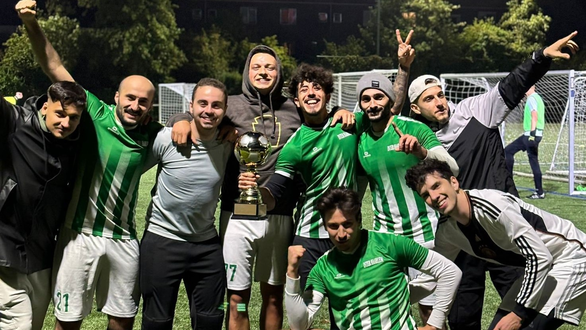
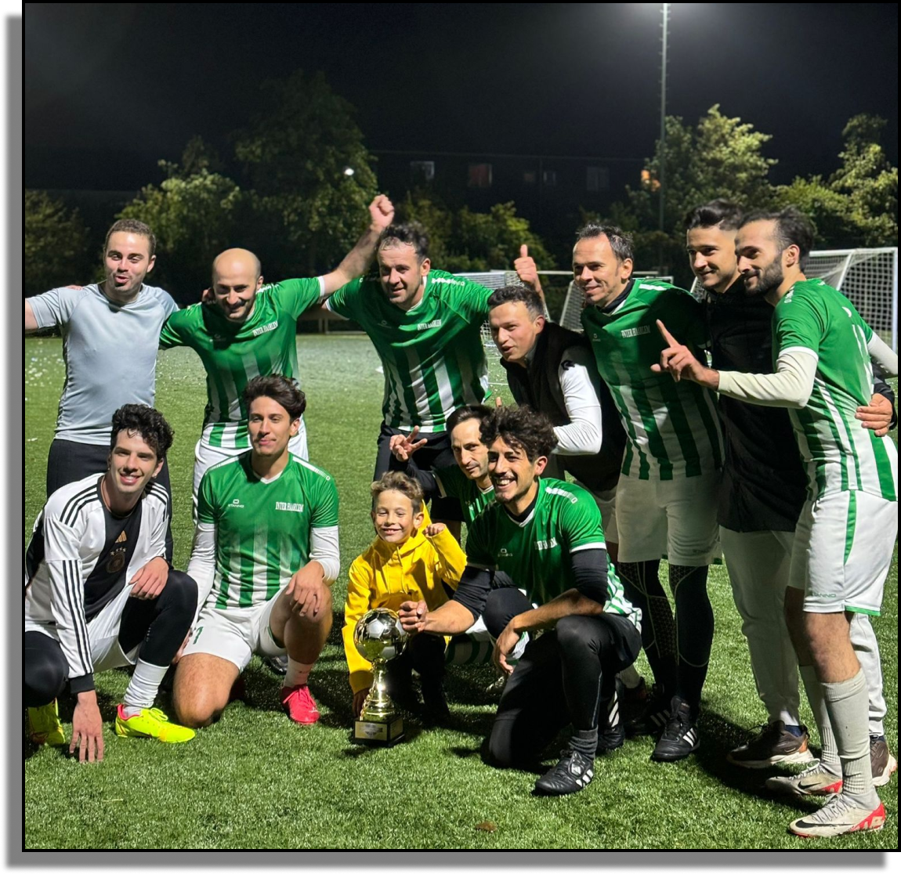

About Us
At our website, we bring together young football enthusiasts in Haarlem who share a passion for casual play and community, providing information about best events, accessible locations, and resources to help you enjoy football in a fun and social environment. Join us to connect with fellow football lovers, discover exciting events, and enhance your game in a welcoming atmosphere focused on fun and friendship!
What can you expect?
1. Locations and Where You Can Play
The Locations and Where You Can Play page is your comprehensive guide to finding football facilities and activities in your area. Users can explore an interactive map featuring fields, parks, and indoor arenas suitable for various types of play. This section highlights opportunities for informal pickup games, organized leagues, and skill clinics tailored to all skill levels. With user-generated community listings, players can easily connect with others to form teams or invite friends to join in on matches, fostering a vibrant local football community.

2.Events
The Events page keeps players updated on all upcoming football activities and gatherings. Featuring a user-friendly calendar, this section allows users to quickly find and register for casual matches, tournaments, and skill development workshops that fit their schedules. Each event listing provides essential details, including descriptions, dates, times, and locations, encouraging active participation and building excitement within the football community.